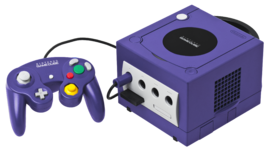
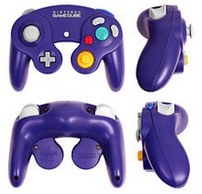
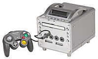
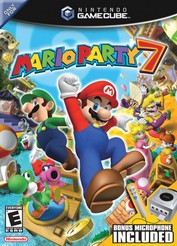
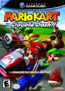

Game Cube (GC)
O Nintendo GameCube (comumente abreviado como GameCube) é um console de videogame doméstico lançado pela Nintendo no Japão e na América do Norte em 2001 e Europa e Austrália em 2002. Como parte da sexta geração de consoles, é o sucessor do Nintendo 64. Competiu com o PlayStation 2 da Sony e o Xbox da Microsoft.
O GameCube é o primeiro console da Nintendo a usar discos ópticos como meio de armazenamento principal. Os discos são do formato miniDVD e o sistema não foi projetado para reproduzir DVDs ou CDs de áudio em tamanho real, diferentemente de seus concorrentes, sendo focado em jogos. O console suporta jogatina on-line limitada para um pequeno número de jogos por meio de um adaptador de banda larga ou modem e pode se conectar à um Game Boy Advance com um cabo de ligação, que permite aos jogadores acessar recursos exclusivos do jogo usando o console portátil como segunda tela e controle.
O GameCube usa cabos de vídeo composto para exibir jogos na televisão; no entanto, existem diferenças nos modelos de GameCube. Os modelos produzidos antes de maio de 2004 também têm a capacidade de usar cabos áudio e vídeo componente, varredura progressiva e uma segunda porta serial. A placa de identificação na parte superior do console com as palavras "Nintendo GameCube" pode ser removida. Este modelo é conhecido como DOL-001. Os recursos mencionados anteriormente foram removidos nos consoles GameCube produzidos entre 2004 e 2007; o modelo posterior era conhecido como DOL-101. O modelo mais recente atualizou o firmware que desativa as fraudes e códigos de fraude do Action Replay (uma versão mais recente foi desenvolvida para contornar isso) e o laser de leitura de disco foi aprimorado de várias maneiras, embora não seja tão durável. O modelo DOL-101 veio com um adaptador de energia de 48 watts para alimentar o console, enquanto o original é de 46 watts.
A recepção do GameCube na época era geralmente positiva. O console foi elogiado por seu controle, extensa biblioteca de software e jogos de alta qualidade, mas foi criticado por seu design e falta de recursos. A Nintendo vendeu 21,74 milhões de unidades GameCube em todo o mundo antes de o console ser descontinuado em 2007. Seu sucessor, o Wii, da sétima geração de consoles, (o primeiro modelo era totalmente compatível com os jogos e acessórios de GameCube) foi lançado em novembro de 2006.
Nintendo GameCube  Desenvolvedor: Nintendo Integrated Research & Development Fabricante: Nintendo Tipo: Console de Videogame 6ª Geração Disponibilidade: 14 de setembro de 2001 18 de novembro de 2001 3 de maio de 2002 17 de maio de 2002 23 de agosto de 2002 Descontinuado: 2007 Unidades vendidas: 21,74 milhões Mídia: Disco ótico de 8 centímetros (apenas para jogos) CPU: 485 MHz PowerPC 750CXe Jogo mais vendido: Super Smash Bros. Melee - 7,09 milhões |
História

Contexto
Em 1997, foi fundada uma empresa de design de hardware gráfico chamada ArtX, composta por vinte engenheiros que haviam trabalhado anteriormente na empresa Silicon Graphics no design do hardware gráfico do Nintendo 64. A equipe foi liderada pelo Dr. Wei Yen, que havia sido o chefe de operações da Nintendo na SGI, o departamento responsável pelo projeto arquitetônico fundamental do Nintendo 64.
Desenvolvimento
Em parceria com a Nintendo em 1998, a ArtX começou à projetar o sistema lógico e o processador gráfico (de codinome "Flipper") do console de videogame de sexta geração da Nintendo, supostamente com o antigo nome de código interno "N2000". Na coletiva de imprensa da Nintendo em maio de 1999, o console foi anunciado publicamente pela primeira vez como "Project Dolphin", o sucessor do Nintendo 64. Posteriormente, a Nintendo começou à fornecer kits de desenvolvimento para desenvolvedores de jogos como Rare e Retro Studios. A Nintendo também formou uma parceria estratégica com a IBM, que criou a CPU do novo console, chamada "Gekko".
A ArtX foi adquirida pela ATI em abril de 2000, quando o design do processador gráfico Flipper já havia sido concluído em maior parte pela ArtX e não foi abertamente influenciado pela ATI. No total, Greg Buchner, co-fundador da equipe da ArtX, lembrou que sua parte da linha do tempo do design de hardware do console havia surgido desde o início de 1998 até a conclusão em 2000.[15] Sobre a aquisição da ArtX pela ATI, um porta-voz da ATI disse: "A ATI agora se torna um dos principais fornecedores do mercado de consoles de videogames via Nintendo. A plataforma Dolphin tem a reputação de ser o rei da colina em termos de desempenho gráfico e de vídeo com arquitetura de 128 bits."
O console foi anunciado como GameCube em uma conferência de imprensa no Japão em 25 de agosto de 2000, abreviado como "NGC" no Japão e "GCN" na América do Norte. A Nintendo apresentou sua linha de softwares para o console de sexta geração na edição de 2001 na E3, concentrando-se em quinze jogos de lançamento, incluindo Luigi's Mansion e Star Wars Rogue Squadron II: Rogue Leader. Vários jogos originalmente programados para serem lançados com o console foram adiados. É também o primeiro console da Nintendo desde o Famicom à não acompanhar um jogo da franquia Super Mario no lançamento.
Muito antes do lançamento do console, a Nintendo havia desenvolvido e patenteado um protótipo inicial de controle de movimento para o GameCube, com o qual a desenvolvedora Factor 5 havia experimentado seus jogos de lançamento. Uma entrevista citou Greg Thomas, vice-presidente de desenvolvimento da Sega of America, dizendo: "O que me preocupa são os controles sensoriais do Dolphin [que costumam incluir microfones e fones de ouvido] porque há um exemplo de alguém pensando em algo diferente". Esses conceitos de controle de movimento não seriam implantados por vários anos, até o Wii Remote.
Antes do lançamento do GameCube, a Nintendo concentrou recursos no lançamento do Game Boy Advance, um console portátil e sucessor do Game Boy original e do Game Boy Color. Como resultado, vários jogos originalmente destinados ao console Nintendo 64 foram adiados para se tornarem lançamentos antecipados no GameCube. Mario Party 3 para o Nintendo 64 foi lançado em maio nos Estados Unidos, um mês antes do lançamento do Game Boy Advance e seis meses antes do GameCube, enfatizando a mudança de recursos da empresa. Simultaneamente, a Nintendo estava desenvolvendo um software para o GameCube que forneceria conectividade futura entre ele e o Game Boy Advance. Certos jogos, como The Legend of Zelda: Four Swords Adventures e Final Fantasy Crystal Chronicles, podem usar o console portátil como uma segunda tela e um controle quando conectado ao console por meio de um cabo de ligação.
A Nintendo iniciou sua campanha de marketing com o slogan "The Nintendo Difference" na E3 2001. O objetivo era se diferenciar da concorrência como uma empresa de entretenimento. Anúncios posteriores tinham o slogan "Born to Play", e os anúncios de jogos apresentavam uma animação de cubo rotativo que se transformava em um logotipo do GameCube e terminavam com uma voz sussurrando "GameCube". Em 21 de maio de 2001, o preço de lançamento do console de US$ 199 foi anunciado, US$ 100 mais barato que o do PlayStation 2 e Xbox.
Lançamento
O GameCube foi lançado no Japão em 14 de setembro de 2001. Aproximadamente 500.000 unidades foram enviadas à tempo aos varejistas. O console estava programado para ser lançado dois meses depois na América do Norte em 5 de novembro de 2001, mas a data foi adiada, em um esforço para aumentar o número de unidades disponíveis. O console acabou sendo lançado na América do Norte em 18 de novembro de 2001, com mais de 700.000 unidades enviadas para a região. Outras regiões seguiram o exemplo no ano seguinte, começando com a Europa no segundo trimestre de 2002.
Em 22 de abril de 2002, a desenvolvedora third-party, Factor 5, anunciou seu kit de desenvolvimento de software de áudio 3D chamado MusyX. Em colaboração com a Dolby Laboratories, o MusyX fornece som surround baseado em movimento codificado como Dolby Pro Logic II.
Descontinuação
Em fevereiro de 2007, a Nintendo anunciou que havia cessado o suporte inicial ao GameCube e que o console havia sido descontinuado.
Hardware
Howard Cheng, diretor técnico de desenvolvimento de tecnologia da Nintendo, disse que o objetivo da empresa era selecionar uma "arquitetura RISC simples" para ajudar a acelerar o desenvolvimento de jogos, dando facilidade aos desenvolvedores de software. A IGN informou que o sistema foi "projetado desde o início para atrair third-parties, oferecendo mais energia à um preço mais baixo. O documento de design da Nintendo para o console especifica que o custo é de extrema importância, seguido pelo espaço". O vice-presidente da ArtX, Greg Buchner, parceiro de hardware, afirmou que seu pensamento orientador sobre o design de hardware do console era visar os desenvolvedores, e não os jogadores, e "olhar para uma bola de cristal" e discernir "o que permitirá aos Miyamoto-sans do mundo desenvolver os melhores jogos".
Iniciando o design do GameCube em 1998, a Nintendo fez uma parceria com a ArtX (posteriormente adquirida pela ATI Technologies) para o sistema lógico e a GPU, e com a IBM para a CPU. A IBM projetou um processador baseado em PowerPC com extensões arquiteturais personalizadas para o console de próxima geração, conhecido como "Gekko", que roda à 485 MHz e possui uma unidade de ponto flutuante (FPU) de 1,9 GFLOPS. Descrito como "uma extensão da arquitetura Power PC da IBM", o processador foi projetado na tecnologia CMOS de 0,18 μm da IBM, que possui interconexões de cobre. A GPU, de codinome "Flipper" roda à 162 MHz e, além de gráficos, gerencia outras tarefas através de seus processadores de áudio e de entrada/saída (E/S).
O GameCube introduziu um formato de disco óptico proprietário baseado no formato MiniDVD como meio de armazenamento para o console, com capacidade de armazenar até 1.5 GB de dados. Essa tecnologia foi projetada pela Matsushita Electric Industrial (atual Panasonic Corporation), que utiliza um esquema proprietário de proteção contra cópias - diferente do Content Scramble System (CSS) encontrado nos DVDs padrão - para impedir reprodução não autorizada. O Famicom Data Recorder, o Famicom Disk System, o SNES-CD e o 64DD haviam explorado várias tecnologias de armazenamento complementares, mas o GameCube foi o primeiro console da Nintendo à se afastar completamente de mídias baseadas em cartucho. Os mini-discos de 1.5 GB do GameCube têm espaço suficiente para a maioria dos softwares, embora alguns jogos exijam um disco extra, maior compactação de vídeo ou remoção do conteúdo presente nas versões de outros consoles. Em comparação, o PlayStation 2 e o Xbox, também consoles de sexta geração, usam CDs e DVDs com tamanhos de até 8.5 GB.
Assim como seu antecessor, o Nintendo 64, diferentes versões e modelos do GameCube foram produzidos em várias cores diferentes. O sistema foi lançado em "Indigo", a cor primária mostrada nas propagandas e no logotipo, e em "Jet Black". Um ano depois, a Nintendo lançou um GameCube de edição limitada denominada "Platinum", que usa um esquema de cores prateado para o console e o controle. Uma versão de cor laranja do console chamada "Spice" acabou sendo lançada apenas no Japão, embora o esquema de cores possa ser encontrado nos controles lançados em outros países.
A Nintendo desenvolveu uma tecnologia 3D estereoscópica para o GameCube, e Luigi's Mansion, um dos jogos de lançamento, suporta. No entanto, o recurso nunca foi ativado fora do desenvolvimento. As TVs 3D não eram comuns na época, e considerou-se que telas e cristais compatíveis para os acessórios adicionais seriam muito caros para o consumidor. Outro recurso não oficial são dois Easter eggs de áudio que podem ser usados quando o console está ligado. Quando o console é ligado com o botão "Z" do controle que está conectado no primeiro slot para controles do console sendo pressionado, um som de inicialização mais extravagante é ouvido no lugar do padrão. Com quatro controles conectados, pressionando o botão "Z" em todos os quatro controles simultaneamente, produz-se uma música "semelhante à um ninja" na inicialização.
Armazenamento
O GameCube possui dois slots para cartão de memória para salvar os dados dos jogos. A Nintendo lançou três opções oficiais de cartão de memória: uma versão de cor cinza com 59 blocos (512 KB), uma com 251 blocos de cor preta (2 MB) e uma versão de cor branca com 1019 blocos (8 MB). Geralmente, eles são anunciados em megabits: 4 Mb, 16 Mb e 64 Mb, respectivamente. Alguns jogos têm problemas de compatibilidade com o cartão de memória de 1019 blocos e pelo menos dois jogos têm problemas de economia com qualquer tamanho. Cartões de memória com maiores capacidades de armazenamento foram lançados por fabricantes terceirizados.
Controle

A Nintendo aprendeu com suas experiências - positivas e negativas - com o design do controle do Nintendo 64 e acompanhou o design de "guidão" de dois analógicos para o GameCube. A forma foi popularizada pelo controle do PlayStation da Sony, lançado em 1994 e sua série de controles DualShock lançada em 1997. Além dos motores vibratórios, a série DualShock era conhecida por ter duas alavancas analógicas para melhorar a experiência 3D nos jogos. A Nintendo e a Microsoft projetaram recursos semelhantes nos controles de seus consoles de sexta geração, mas em vez de manter as alavancas analógicas paralelas entre si, elas escolheram escaloná-los trocando as posições do direcional (d-pad) e do analógico esquerdo. O controle do GameCube possui um total de oito botões, duas alavancas analógicas, um d-pad e um motor de vibração interno. A alavanca analógica principal está à esquerda, com o d-pad localizado abaixo e mais perto do centro. À direita, há quatro botões: um grande botão verde "A" no centro, um botão menor e de cor vermelha "B" à esquerda, um botão "X" à direita e um botão "Y" na parte superior. Abaixo e por dentro, há uma alavanca analógica amarela "C", que geralmente serve uma variedade de funções no jogo, como controlar o ângulo da câmera. O botão Start/Pause está localizado no meio e o motor de vibração está dentro do centro do controle.
Na parte de cima do controle, há dois gatilhos "sensíveis à pressão" marcados com "L" e "R". Cada um fornece essencialmente duas funções: uma analógica e outra digital. Quando o gatilho é pressionado, ele emite um sinal analógico que aumenta quanto mais ele é pressionado. Uma vez totalmente pressionado, o gatilho "clica" registrando um sinal digital que pode ser usado para uma função separada dentro de um jogo. Há também um botão digital roxo no lado direito marcado com "Z".
O tamanho e o posicionamento proeminente do botão A do controle é exclusivo do GameCube. Tendo sido o principal botão de ação em designs anteriores de controles da Nintendo, foi dado ao botão A um tamanho maior e um posicionamento mais centralizado para o controle do GameCube. A alavanca analógica emborrachada, em combinação com a orientação geral do botão do controle, tinha como objetivo reduzir a incidência de lesões por esforço repetitivo ou dor em qualquer parte das mãos, pulsos, antebraços e ombros como resultado de brincadeiras à longo prazo.
O tamanho e o posicionamento proeminente do botão A do controle é exclusivo do GameCube. Tendo sido o principal botão de ação em designs anteriores de controles da Nintendo, foi dado ao botão A um tamanho maior e um posicionamento mais centralizado para o controle do GameCube. A alavanca analógica emborrachada, em combinação com a orientação geral do botão do controle, tinha como objetivo reduzir a incidência de lesões por esforço repetitivo ou dor em qualquer parte das mãos, pulsos, antebraços e ombros como resultado de brincadeiras à longo prazo.
Em 2002, a Nintendo lançou o WaveBird Wireless Controller, o primeiro controle de videogame sem fio desenvolvido por uma fabricante de consoles. O controle sem fio baseado em radiofrequência tem design semelhante ao controle padrão. Ele se comunica com o GameCube por meio de um receptor sem fio conectado à um dos slots para controle do console. Alimentado por duas pilhas AA, que ficam encaixadas em um compartimento na parte inferior do controle, o WaveBird não possui a funcionalidade de vibração do controle padrão. Além das entradas padrão, o WaveBird possui um dial de seleção de canal - também encontrado no receptor - e um botão liga/desliga. Um LED laranja na face do controle indica quando está ligado. O controle está disponível em esquemas de cores cinza claro e platina.
Compatibilidade
O GameCube não suporta jogos de outros consoles domésticos da Nintendo, mas com o acessório Game Boy Player, ele pode rodar jogos de Game Boy, Game Boy Color e Game Boy Advance. O sucessor do GameCube, o Wii, tem retrocompatibilidade com os controles, cartões de memória e jogos do GameCube. No entanto, revisões posteriores do Wii - incluindo a "Family Edition" lançada em 2011 e o Wii Mini lançado em 2012 - deixaram de ser compatíveis com todo o hardware do GameCube.
Panasonic Q

Uma versão híbrida do GameCube com um DVD player comercial, chamada Q, foi desenvolvida pela Panasonic como parte do acordo firmado com a Nintendo para desenvolver a unidade óptica do hardware original do GameCube. Apresentando um design completamente revisado, o Q supera a limitação de tamanho do leitor de MiniDVD do GameCube original, adicionando uma bandeja de DVD, entre outras revisões de hardware. Lançado exclusivamente no Japão em dezembro de 2001, as baixas vendas resultaram na descontinuação do Q em dezembro de 2003.
Jogos

Em sua vida útil de 2001 à 2007, o GameCube teve mais de 600 jogos lançados.
A Nintendo é tradicionalmente reconhecida por lançar jogos inovadores, principalmente das franquias Super Mario e The Legend of Zelda. Essas séries continuaram no GameCube e aumentaram a popularidade do console. Como editora, a Nintendo também se concentrou em criar novas franquias, como Pikmin e Animal Crossing, e em renovar algumas que passaram em branco no Nintendo 64, principalmente a série Metroid, com o lançamento de Metroid Prime. O console também teve sucesso com o aclamado pela crítica The Legend of Zelda: The Wind Waker e Super Mario Sunshine, e seu jogo mais vendido, Super Smash Bros. Melee, que vendeu 7 milhões de cópias em todo o mundo. Embora comprometida com sua biblioteca de softwares, no entanto, a Nintendo ainda foi criticada por não apresentar jogos suficientes durante a janela de lançamento do console - um sentimento agravado pelo lançamento de Luigi's Mansion em vez de um jogo em 3D da série Mario.
No início da história da Nintendo, a empresa alcançou um sucesso considerável com o suporte de desenvolvedoras third-party no Nintendo Entertainment System e Super NES. A concorrência do Sega Genesis e do PlayStation da Sony nos anos 90 mudou o cenário do mercado e reduziu a capacidade da Nintendo de obter suporte exclusivo e de terceiros no Nintendo 64. A mídia baseada em cartucho do console também aumentava o custo de desenvolvimento de software, em contrapartida aos discos ópticos mais baratos e de maior capacidade usados pelo PlayStation.
Com o GameCube, a Nintendo pretendia reverter essa tendência, conforme evidenciado pelo número de jogos de terceiros disponíveis no lançamento. O novo formato de disco óptico introduzido com o GameCube aumentou significativamente a capacidade de armazenamento e reduziu os custos de produção. A estratégia funcionou. Exclusivos de alto nível, como Star Wars Rogue Squadron II: Rogue Leader da Factor 5, Resident Evil 4 da Capcom e Metal Gear Solid: The Twin Snakes da Konami tiveram muito sucesso. A Sega, focada no desenvolvimento de jogos para outras plataformas depois do fim de seu console Dreamcast, ofereceu um grande suporte ao GameCube, trazendo jogos como Crazy Taxi e Sonic Adventure 2. A empresa também iniciou novas franquias no GameCube, incluindo Super Monkey Ball. Várias third-parties foram contratadas para trabalhar em novos jogos para franquias existentes da Nintendo, incluindo Star Fox Assault e Donkey Konga da Namco e Wario World da Treasure.
Alguns desenvolvedoras terceirizadas, como Ubisoft, THQ, Disney Interactive Studios, Humongous Entertainment e EA Sports, continuaram à lançar jogos para o GameCube até 2007.
Conectividade online

Oito jogos do GameCube suportam conectividade online, cinco com suporte à Internet e três com suporte à rede de área local (LAN). Os únicos jogos com capacidade para Internet lançados em territórios ocidentais são três RPGs da série Phantasy Star da Sega: Phantasy Star Online Episode I & II, Phantasy Star Online Episode I & II Plus e Phantasy Star Online Episode III: C.A.R.D. Revolution. Os servidores oficiais foram desativados em 2007, mas os jogadores ainda podem se conectar à servidores privados mantidos por fãs. O Japão recebeu dois jogos adicionais com recursos de Internet, um RPG cooperativo, Homeland e um jogo de beisebol com conteúdo para download, Jikkyō Powerful Pro Yakyū 10. Por fim, três jogos de corrida têm modos multiplayer de LAN: 1080° Avalanche, Kirby Air Ride e Mario Kart: Double Dash. Esses três jogos podem ser forçados pela Internet com software de PC de terceiros capaz de encapsular o tráfego de rede do GameCube.
Para jogar online, os jogadores devem instalar um adaptador de banda larga ou modem oficial em seu sistema, pois o GameCube não possui recursos de rede prontos para uso. A Nintendo nunca encomendou nenhum servidor ou serviço de Internet para fazer interface no console, mas permitiu que outros editores o fizessem e os tornou responsáveis pelo gerenciamento das experiências online de seus jogos.
Recepção
O GameCube recebeu críticas geralmente positivas após o seu lançamento. A revista PC Magazine elogiou o design geral do hardware e a qualidade dos jogos disponíveis no lançamento. A CNET deu uma classificação média de revisão, observando que, embora o console não tenha alguns recursos oferecidos por seus concorrentes, é relativamente barato, tem um controle com ótimo design e com uma linha decente de jogos. Em análises posteriores, críticas montadas contra o console geralmente se concentram em seu design, descrevendo-o como "brinquedo". No meio de baixos números de vendas e do dano financeiro associado à Nintendo, um artigo da revista Time chamou o GameCube de "desastre não mitigado".
Retrospectivamente, a Joystiq comparou a janela de lançamento do GameCube com o seu sucessor, o Wii, observando que a "falta de jogos" do GameCube resultou em um lançamento inferior, e a lista limitada de jogos online do console prejudicou sua participação no mercado à longo prazo. A Time International concluiu que o sistema apresentava baixos números de vendas, porque faltavam "inovações técnicas".
Vendas
No Japão, entre 280.000 e 300.000 consoles GameCube foram vendidos durante os primeiros três dias de venda, de uma remessa inicial de 450.000 unidades. Durante o fim de semana de lançamento, a Nintendo arrecadou US$ 100 milhões em produtos relacionados ao GameCube na América do Norte. O console foi vendido em várias lojas, vendendo mais rapidamente do que os dois concorrentes, o Xbox e o PlayStation 2, haviam inicialmente vendido. O jogo mais popular no lançamento do console foi Luigi's Mansion, que, de acordo com a Nintendo, vendeu mais no lançamento do que Super Mario 64. Outros jogos populares incluem Star Wars Rogue Squadron II: Rogue Leader e Wave Race: Blue Storm. No início de dezembro de 2001, o sistema havia vendido 600.000 unidades nos EUA.
A Nintendo vendeu aproximadamente 22 milhões de consoles GameCube em todo o mundo durante sua vida útil, ficando um pouco atrás dos 24 milhões do Xbox, e muito atrás dos 155 milhões do PlayStation 2. O antecessor do GameCube, o Nintendo 64, superou-o também, vendendo quase 33 milhões de unidades. O console conseguiu vender mais do que o Dreamcast, console da Sega que teve um curto ciclo de vida, que rendeu 9,13 milhões de vendas de unidades. Em setembro de 2009, a IGN classificou o GameCube em 16º lugar na lista dos melhores consoles de videogames de todos os tempos, colocando-o atrás dos três concorrentes de sexta geração: o PlayStation 2 (3°), o Dreamcast (8°) e o Xbox (11°). Em 31 de março de 2003, o GameCube havia vendido 9,55 milhões de unidades em todo o mundo, ficando abaixo do objetivo inicial da Nintendo de 10 milhões de consoles.
Muitos dos jogos produzidos pela Nintendo, como Super Smash Bros. Melee e Mario Kart: Double Dash, tiveram vendas altas, embora isso normalmente não beneficiasse desenvolvedores de terceiros nem direcionasse diretamente as vendas de seus jogos. Muitos jogos multiplataforma- como franquias de esportes lançadas pela Electronic Arts - foram vendidos em números bem abaixo dos do PlayStation 2 e Xbox, levando alguns desenvolvedores a reduzir ou interromper completamente o suporte ao GameCube. Exceções incluem Sonic Adventure 2 e Super Monkey Ball da Sega, que supostamente renderam mais vendas no GameCube do que a maioria dos jogos da empresa no PlayStation 2 e Xbox. Depois de vários anos perdendo dinheiro com o desenvolvimento de jogos para o console da Nintendo, a Eidos Interactive anunciou em setembro de 2003 que encerraria o suporte ao GameCube, cancelando vários jogos que estavam em desenvolvimento. Mais tarde, no entanto, a Eidos retomou o desenvolvimento de jogos para o GameCube, lançando sucessos como Lego Star Wars: The Video Game e Tomb Raider: Legend. Além disso, vários jogos de terceiros originalmente destinados à serem exclusivos do GameCube - em especial Resident Evil 4 - foram portados para outros sistemas, na tentativa de maximizar os lucros após as vendas fracas das versões originais de GameCube.
Em março de 2003, a agora extinta varejista britânica Dixons removeu todos os consoles GameCube, acessórios e jogos de suas lojas. Nesse mesmo mês, outra varejista do Reino Unido, a Argos, reduziu o preço do GameCube em suas lojas para 78,99 libras, que eram mais de 50 libras mais baratas que o preço registrado da Nintendo para o console na época.
Com as vendas caindo e milhões de consoles não vendidos em estoque, a Nintendo interrompeu a fabricação do GameCube nos primeiros nove meses de 2003 para reduzir as unidades excedentes. As vendas recuperaram um pouco depois de uma queda de preço para US$ 99,99 em 24 de setembro de 2003 e do lançamento do pacote The Legend of Zelda: Collector's Edition. Um disco de demonstração, o GameCube Preview Disc, também foi lançado em pacote em 2003. A partir desse período, as vendas do GameCube continuaram estáveis, principalmente no Japão, mas o GameCube permaneceu em terceiro lugar nas vendas mundiais durante a sexta geração, devido ao desempenho mais fraco das vendas em outros lugares.
Satoru Iwata disse aos investidores que o GameCube venderia 50 milhões de unidades em todo o mundo até março de 2005, mas até o final de 2006, ele havia vendido apenas 21,7 milhões, vendendo menos da metade do que a Nintendo previa.
Fatia de mercado
Com o GameCube, a Nintendo não conseguiu recuperar a participação de mercado perdida por seu antecessor, o Nintendo 64. Durante toda a vida útil do console, as vendas de hardware do GameCube permaneceram muito atrás do seu concorrente direto, o PlayStation 2, e um pouco atrás do Xbox. O apelo "voltado para a família" do console e a falta de apoio de algumas desenvolvedoras terceirizadas distorceram o GameCube em direção à um mercado mais jovem, que era uma fatia minoritária do mercado de jogos durante a sexta geração. Muitos jogos de terceiros populares entre adolescentes ou adultos, como a série de sucesso Grand Theft Auto e vários jogos de tiro em primeira pessoa, passaram em branco no GameCube em favor do PlayStation 2 e Xbox.
Em junho de 2003, o GameCube possuía 13% do mercado, vinculando-se ao Xbox em vendas, mas muito abaixo dos 60% do PlayStation 2.
Legado
Muitos jogos que estrearam no GameCube, como Pikmin, Chibi-Robo!, Metroid Prime e Luigi's Mansion, tornaram-se franquias ou sub-séries populares da Nintendo.
Os controles de GameCube têm suporte limitado no Wii U e no Nintendo Switch, para jogar Super Smash Bros. for Wii U e Super Smash Bros. Ultimate, respectivamente, através de um adaptador USB.